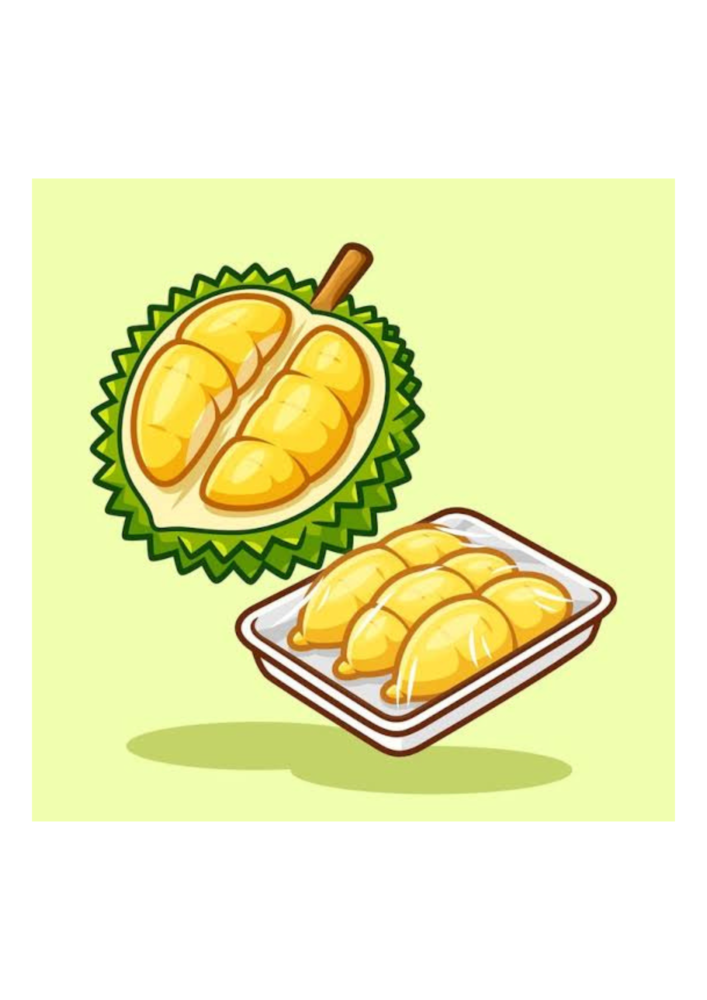

Year 4 English | Reading Comprehension
Read, Drag and Drop, and Learn!

Read the passage carefully before answering the questions.
Durian is a famous fruit in Malaysia. It is known as the king of fruits. Many Malaysians love eating durian.
Durian is a big fruit with a green or brown shell. Its shell has many sharp thorns. Inside the fruit, there is soft yellow flesh.
Durian has a strong smell. Some people like the smell, but others do not. The flesh tastes sweet and creamy.
People can eat durian fresh. They also use durian to make ice cream, cakes and other desserts.
Durian is a special fruit that many people enjoy in Malaysia.
Fill in the blanks with the correct words. Drag the words into the blank spaces. You can also tap a word and then tap a blank.